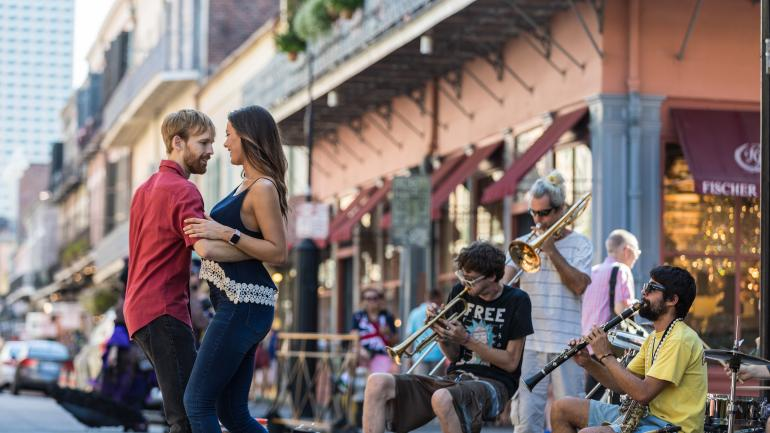

열대 섬 마우이로 떠나다
하와이 제도에서 두 번째로 큰 섬인 마우이가 열대 기후, 해변의 고운 모래사장, 푸른 나뭇잎, 궁전 같은 리조트로 신혼부부를 유혹합니다. 지프차를 타고 돌아다니며 숨은 만이나 폭포를 발견하고, 할레아칼라 국립공원(Haleakala National Park)에서 하이킹을 하고, 농장 체험을 통해 신선한 파인애플과 다른 열대과일을 맛보세요. 저녁에는 하와이 토속 음식을 즐기고, 하와이 전통 향연 루아우(luau)에서 훌라(hula) 공연을 감상해보세요.
마우이 앞바다에서 크루즈 도중 일몰을 바라보는 커플

뉴올리언스의 축제 분위기
“Let the good times roll(즐기자)”가 비공식 슬로건인 루이지애나주 뉴올리언스에서는 매일매일이 축제입니다. 클럽과 길거리에서 흘러나오는 재즈와 블루스 음악에 몸을 맡기고, 진짜 크리올 음식과 케이준 음식을 맛보고, 전차를 타거나 걸어서 오래되고 매력적인 동네를 탐방해보세요. 미시시피강을 떠나디는 재즈 디너 크루즈를 즐기며, 뉴올리언스 프라이드(New Orleans Pride)나 세컨드 라인(Second Line) 퍼레이드에 참여해보세요.
로열 스트리트에서 길거리 악단의 음악에 춤을 추는 사람들
